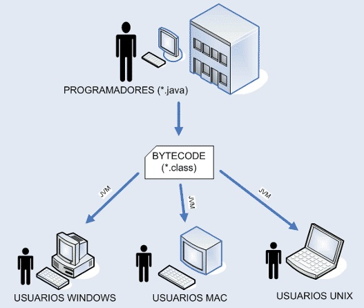

Programación
Apuntes PrácticasTerminología
[IDE] Entorno de desarrollo integrado:
Paradigma:
Diferentes enfoques mediante los cuales abordamos un problema
Algoritmo:
Clases:
Plantilla que agrupa una serie de objetos (reales o no reales) con su identificador y sus propiedades pero comparten características en común.
Variables:
Métodos:
Bloques:
[Ej 2] ¿Qué es Java?
⬇️Java es un lenguaje de programación y una plataforma informática creada por Sun Microsystems en 1995.
En diciembre de 2006, Sun Microsystems comenzó el relanzamiento de su plataforma Java bajo la licencia GPL de GNU.
En abril de 2009 Oracle adquirió Sun Microsystems, lo que generó temor en la comunidad ante la posible mercantilización del lenguaje de programación orientado a objetos más popular actualmente. Por ahora Oracle ha seguido manteniendo Java, estando las versiones posteriores a la 6 bajo su control.
El lenguaje Java se creó con cinco objetivos principales:
- Usar el paradigma de la programación orientada a objetos.
- Permitir la ejecución de un mismo programa en múltiples sistemas operativos.
- Incluir por defecto soporte para trabajo en red.
- Ser capaz de ejecutar código en sistemas remotos de forma segura.
- Ser fácil de usar y tomar lo mejor de otros lenguajes orientados a objetos, como C++.
Java es un lenguaje orientado a objetos, es decir, los datos y las funciones o métodos se combinan en entidades llamadas objetos. Un objeto puede verse como un paquete que contiene el “comportamiento” (el código) y el “estado” (datos).
La creación de entidades más genéricas (objetos), permite la reutilización del software en diferentes proyectos. En este sentido, los objetos podrían verse como piezas reutilizables que pueden emplearse en múltiples proyectos distintos, posibilitando así a la industria del software construir proyectos de envergadura empleando componentes ya existentes y de comprobada calidad.
La segunda característica, la independencia de la plataforma, significa que programas escritos en el lenguaje Java pueden ejecutarse igualmente en cualquier tipo de hardware. Este es el significado de ser capaz de escribir un programa una vez y que pueda ejecutarse en cualquier dispositivo.
Para ello, se compila el código fuente escrito en lenguaje Java, para generar un código conocido como “bytecode” (específicamente Java bytecode), instrucciones máquina simplificadas específicas de la plataforma Java. Esta pieza está “a medio camino” entre el código fuente y el código máquina que entiende el dispositivo destino. El bytecode es ejecutado entonces en la máquina virtual (JVM), un programa escrito en código nativo de la plataforma destino (que es el que entiende su hardware), que interpreta y ejecuta el código.
Java se puede escribir, compilar y depurar en diferentes IDE (entorno de desarrollo integrado), como por ejemplo Eclipse o Bluej.
Referencia 1; Referencia 2;⬆️
Introducción a clases: HolaMundoCruel
⬇️|public class HolaMundoCruel {
| public static void main(String args[]) {
| System.out.println("Hola mundo cruel!");
| }
|}